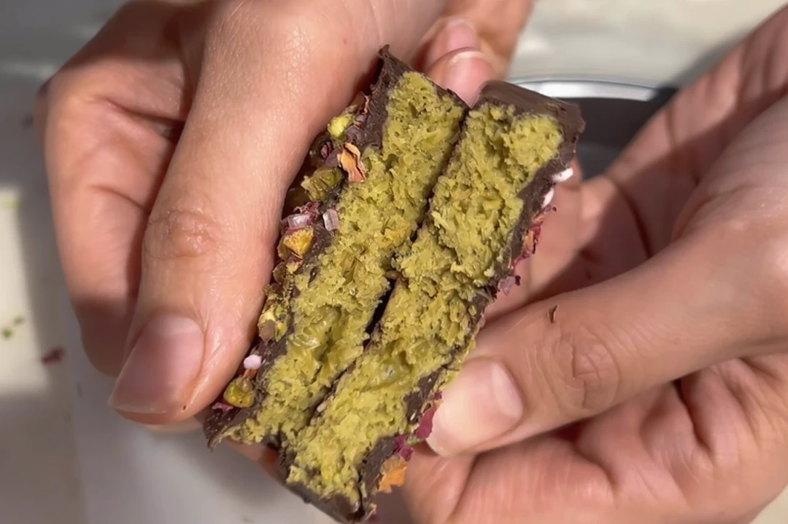
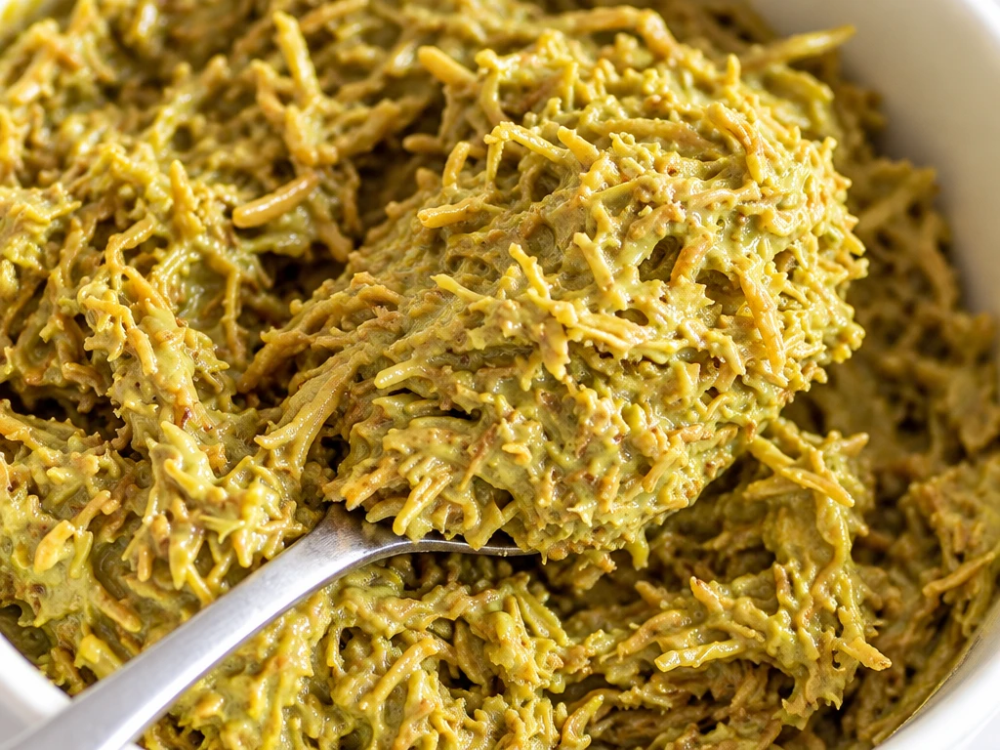
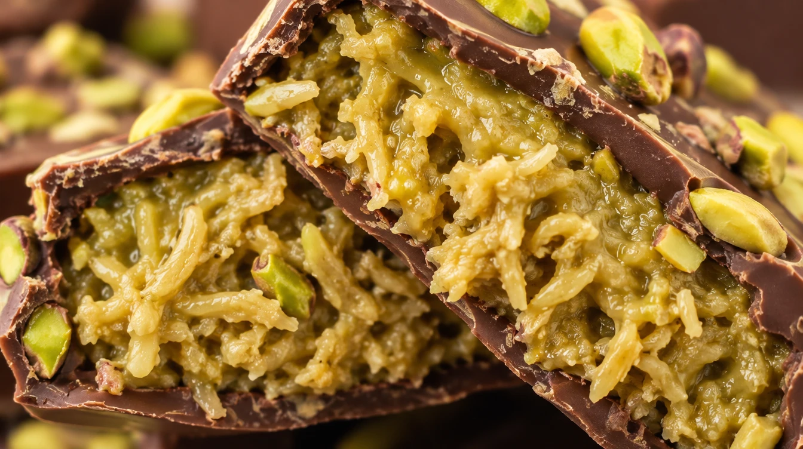

VERYGOOD JOURNAL · INGREDIENTS & TEXTURE
Editorial Guide · 4 min read · Understanding Kataifi, Pistachio & Shell Balance
You break open a pistachio-filled chocolate bar and spot fine golden strands running through the green centre. The outer chocolate shell gives a clean snap; the filling inside offers a separate, lighter crunch.
In a kataifi-filled Dubai-style bar, that distinctive crispness comes from toasted shredded pastry rather than chopped nuts alone. Pistachio brings the rich nut character, while Callebaut’s published Dubai bar formulation pairs both with tahini and milk chocolate.[8]
Knowing how each component works makes it much easier to understand what you are looking at—and what questions to ask—before you buy a bar.

Fine strands of toasted kataifi pastry give a Dubai-style pistachio centre a light, layered crunch inside the chocolate shell.[8]
Kataifi is a very fine, thread-like shredded pastry traditionally used across Middle Eastern and Mediterranean desserts. In Callebaut’s reference recipe, the pastry strands are toasted until golden and crisp before being folded into the pistachio filling.[8]
Those delicate toasted strands create a completely different mouthfeel from a smooth nut praline. If you were expecting nothing but soft pistachio cream inside the shell, kataifi explains why each bite feels brisk and multi-layered.
When browsing online or in store, look for a genuine cross-section photograph rather than relying on green colour alone. A clear cut-through shows whether pastry strands are present—though you will still want to read the ingredient list for the complete picture.
ANATOMY OF THE BITE
Three components working together
01 · PASTRY CRUNCH
Toasted Kataifi
Fine shredded pastry toasted golden to deliver a light, flaky crunch.
02 · NUTTY CENTRE
Pistachio & Tahini
Brings roasted nut flavour, colour, and a creamy base around the strands.
03 · OUTER SNAP
Chocolate Shell
Frames the sweet filling with cocoa depth and a clean exterior snap.
Component roles summarised from Callebaut Chocolate Academy’s Dubai bar formulation.[8]
In a well-balanced filling, the pistachio paste provides roasted nut richness while the toasted kataifi supplies the audible crunch. Callebaut’s version also incorporates tahini (sesame paste) to round out the savoury-sweet profile—though that is one published recipe rather than a fixed rule every maker must follow.[8]
Because “Dubai chocolate” is a popular style rather than a regulated ingredient standard, two products sold under a similar name can be built quite differently. Reading the product description tells you whether you are buying a crisp kataifi-filled bar, a smooth pistachio ganache, or another dessert inspired by the trend.

Golden toasted kataifi strands bring crisp pastry texture, while pistachio paste supplies creamy nut depth.[8]
When you taste a filled bar, pay attention to the outer shell and the inner centre as two halves of the experience. Do you enjoy the flavour of the chocolate casing as much as the filling? Do you prefer a delicate, thin shell that gives way immediately, or a thicker chocolate bite that balances a sweet centre?
These are practical questions even if you never plan to temper chocolate at home. You do not need to be a pastry chef to know whether you prefer a brisk, crunchy centre or a slow, velvety melt.

Comparing a crisp kataifi-filled square with a smooth nut praline highlights how both shell thickness and filling texture shape the bite.
WHAT TO CHECK BEFORE YOU BUY
A cross-section photo can show texture, but it can never replace the product label. Before ordering or buying, check three essentials:
01 · Clear Filling Description
Look for wording that specifies toasted kataifi pastry rather than relying on green colour or a pistachio photo alone.
02 · Storage & Date Information
Follow the maker’s storage instructions and check the best-before or use-by date.
Food Standards Australia New Zealand (FSANZ) lists wheat, gluten, tree nuts, sesame, and milk among the allergens that must be declared when present, and notes that allergen information for unpackaged desserts can be requested directly from the supplier.[6]
Never assume that a dark chocolate shell makes the filling dairy-free, or that a dessert is suitable for a wheat or sesame allergy simply because those ingredients are not obvious in a photograph.
If the crisp pastry centre is what excites you, look specifically for a description that mentions kataifi. If you prefer a velvety, uninterrupted melt, ask for a smooth nut praline or chocolate ganache instead.
The most helpful question is always what sits inside the particular dessert you are choosing. A trend name like “Dubai-style” can start your search, but clear ingredient and texture notes should help you finish it.
HOW TO CHOOSE YOUR BITE
01 · For a Crisp, Layered Crunch
Check that the description explicitly includes toasted kataifi (shredded pastry) alongside pistachio.[8]
02 · For a Smooth, Velvety Melt
Choose a classic nut praline, ganache, or flourless chocolate cake without shredded pastry.
03 · For Dietary Peace of Mind
Always verify wheat/gluten, pistachio, sesame, and dairy declarations before ordering.[6]
EXPLORE VERYGOOD · SYDNEY
Looking for a memorable chocolate bite?
Explore verygood’s current dessert collection in Sydney, and read about the flavours, textures, and allergen details in each creation.
Sources & References
[6] Food Standards Australia New Zealand (FSANZ) — Allergen labelling for consumers (https://www.foodstandards.gov.au/consumer/labelling/allergen-labelling)
[8] Callebaut Chocolate Academy — Dubai chocolate bar recipe and ingredient roles (https://chocolate-academy.com/en-US/inspiration/recipes/dubai-bar)